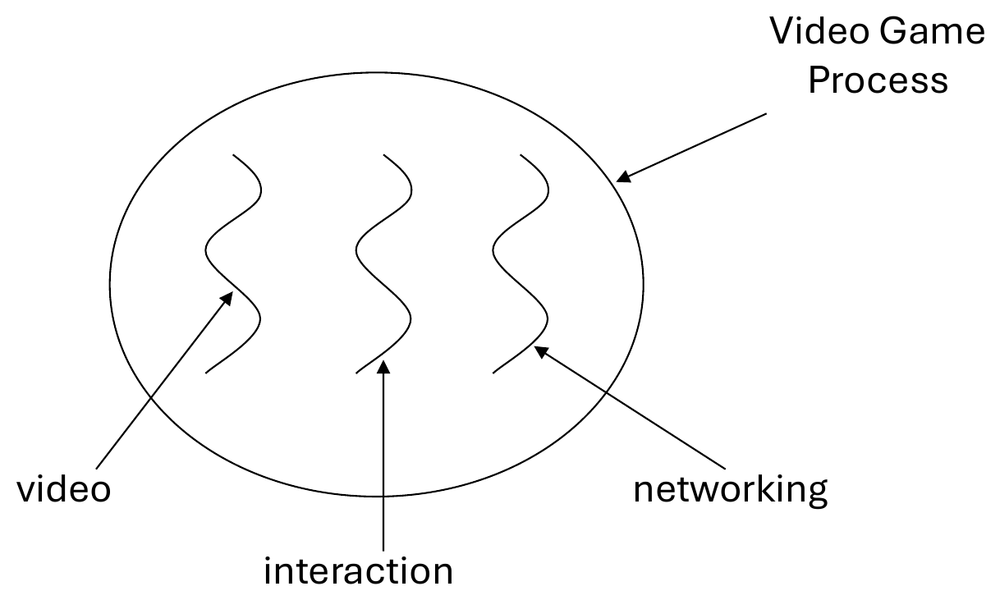

CS254 Visual Programming · Lecture 14
Threads
What threads are, the two ways to create one, controlling them, why a Swing program must keep the Event Dispatch Thread free, invokeLater and invokeAndWait, and SwingWorker. Every slide of Lecture 14 – Threads (25 slides) in order with all code, plus live demos: run Example 1 and 2 and watch the threads take turns, freeze a window and then fix it three ways, replay the invokeAndWait and invokeLater programs, and drive a SwingWorker with a progress bar.
Slides 1–5
What a thread is
Threads 1
The slides adapted from different resources including:
- Shivaram Venkataraman, CS 537 - Introduction to Operating Systems
- COMPSCI230 Software Construction
What is a Thread? 2
- Individual and separate unit of execution that is part of a process
- multiple threads can work together to accomplish a common goal
- Video Game example
- one thread for graphics
- one thread for user interaction
- one thread for networking
What is a Thread? 3

Advantages 4
- easier to program
- 1 thread per task
- can provide better performance
- thread only runs when needed
- no polling to decide what to do
- multiple threads can share resources
- utilize multiple processors if available
Disadvantage 5
- multiple threads can lead to deadlock
- overhead of switching between threads
Added Deadlock: thread A holds resource 1 and waits for resource 2, while thread B holds resource 2 and waits for resource 1. Neither can continue, ever. Polling (slide 4) means checking again and again "is there something to do yet?", which wastes time; a thread can instead sleep until it's needed.
Slides 6–12
Creating threads
Creating Threads (method 1) 6
- extending the Thread class
- must implement the run() method
- thread ends when run() method finishes
- call .start() to get the thread ready to run
Creating Threads Example 1 7–8
class Output extends Thread {
private String toSay;
public Output(String st) {
toSay = st;
}
public void run() {
try {
for(;;) {
System.out.println(toSay);
sleep(1000);
}
} catch(InterruptedException e) {
System.out.println(e);
}
}
}class Program {
public static void main(String [] args) {
Output thr1 = new Output("Hello");
Output thr2 = new Output("There");
thr1.start();
thr2.start();
}
}- main thread is just another thread (happens to start first)
- main thread can end before the others do
- any thread can spawn more threads
Creating Threads (method 2) 9
- implementing Runnable interface
- virtually identical to extending Thread class
- must still define the run()method
- setting up the threads is slightly different
Creating Threads Example 2 10–11
class Output implements Runnable {
private String toSay;
public Output(String st) {
toSay = st;
}
public void run() {
try {
for(;;) {
System.out.println(toSay);
Thread.sleep(1000);
}
} catch(InterruptedException e) {
System.out.println(e);
}
}
}class Program {
public static void main(String [] args) {
Output out1 = new Output("Hello");
Output out2 = new Output("There");
Thread thr1 = new Thread(out1);
Thread thr2 = new Thread(out2);
thr1.start();
thr2.start();
}
}- main is a bit more complex
- everything else identical for the most part
Advantage of Using Runnable 12
- remember - can only extend one class
- implementing runnable allows class to extend something else
Slide 13
Controlling threads
Controlling Java Threads 13
- _.start(): begins a thread running
- wait() and notify(): for synchronization
- _.stop(): kills a specific thread (deprecated)
- _.suspend() and resume(): deprecated
- _.join(): wait for specific thread to finish
- _.setPriority(): 0 to 10 (MIN_PRIORITY to MAX_PRIORITY); 5 is default (NORM_PRIORITY)
Added · join and interrupt in code
Thread worker = new Thread(() -> {
try {
while (true) { doSomeWork(); Thread.sleep(200); }
} catch (InterruptedException e) {
System.out.println("asked to stop, cleaning up"); // run() ends here
}
});
worker.start();
// … later, e.g. in a Stop button:
worker.interrupt(); // politely ask it to stop
worker.join(); // wait until it really has (throws InterruptedException)Slides 14–16
The Event Dispatch Thread
GUI programming is multithreaded 14
Event-driven programming
- Event dispatch thread (EDT) handles all GUI events
- Mouse events, keyboard events, timer events, etc.
- Program registers callbacks ("listeners")
- Function objects invoked in response to events
Ground rules for GUI programming 15
- All GUI activity is on event dispatch thread
- No other time-consuming activity on this thread
- Blocking calls (e.g., I/O) absolutely forbidden
- Many GUI programs violate these rules
- They are broken
- Violating rule 1 can cause safety failures
- Violating rule 2 can cause liveness failures
Ensuring all GUI activity is on EDT 16
- Never make a Swing call from any other thread
- Swing calls includes Swing constructors
- If not on EDT, make Swing calls with invokeLater:
- Swing calls includes Swing constructors
public static void main(String[] args) {
SwingUtilities.invokeLater(() -> new Test().setVisible(true));
}✓ ticked on the slide
public void actionPerformed(ActionEvent e)
{
new Thread(new Runnable()
{
final String text = readHugeFile();
SwingUtilities.invokeLater(new Runnable()
{
public void run()
{
textArea.setText(text);
}
});
}).start();
}blocks the EDT
public void actionPerformed(ActionEvent e)
{
final String text = readHugeFile();
textArea.setText(text);
}✗ "wrong", handwritten on the slide
public void actionPerformed(ActionEvent e)
{
new Thread(new Runnable()
{
final String text = readHugeFile();
textArea.setText(text);
}).start();
}Slides 17–20
invokeAndWait and invokeLater
Callbacks execute on the EDT 17
- The SwingUtilities class has a static method available to use to put references to blocks of code onto the event queue:
public static void invokeAndWait(Runnable target) throws InterruptedException, InvocationTargetException
- The parameter target is a reference to an instance of Runnable.
- In this case, the Runnable will not be passed to the constructor of Thread.
- The Runnable interface is simply being used as a means to identify the entry point for the event thread. Just as a newly spawned thread will invoke run(), the event thread will invoke run() when it has processed all the other events pending in the queue.
- An InterruptedException is thrown if the thread that called invokeAndWait() is interrupted before the block of code referred to by target completes.
- An InvocationTargetException (a class in the java.lang.reflect package) is thrown if an uncaught exception is thrown by the code inside run()
public static void invokeLater(Runnable target)
- it puts the request on the event queue and returns right away.
- The invokeLater() method does not wait for the block of code inside the Runnable referred to by target to execute.
- This allows the thread that posted the request to move on to other activities.
- a new thread is not created when Runnable is used with SwingUtilities.invokeLater() and SwingUtilities.invokeAndWait()
- The event thread will end up calling the
run()method of theRunnablewhen its turn comes up on the event queue.
- The event thread will end up calling the
inovkeAndWait Example 18
import java.awt.*;
import java.awt.event.*;
import java.lang.reflect.*;
import javax.swing.*;
public class InvokeAndWaitDemo extends Object {
private static void print(String msg) {
String name = Thread.currentThread().getName();
System.out.println(name + ": " + msg);
}
public static void main(String[] args) {
final JLabel label = new JLabel("————");
JPanel panel = new JPanel(new FlowLayout());
panel.add(label);
JFrame f = new JFrame("InvokeAndWaitDemo");
f.setContentPane(panel);
f.setSize(300, 100);
f.setVisible(true);
try {
print("sleeping for 3 seconds");
Thread.sleep(3000);
print("creating code block for event thread");
Runnable setTextRun = new Runnable() {
public void run() {
print("about to do setText()");
label.setText("New text!");
}
};
print("about to invokeAndWait()");
SwingUtilities.invokeAndWait(setTextRun);
print("back from invokeAndWait()");
} catch ( InterruptedException ix ) {
print("interrupted while waiting on invokeAndWait()");
} catch ( InvocationTargetException x ) {
print("exception thrown from run()");
}
}
}inovkeLater Example 19
import java.awt.*;
import java.awt.event.*;
import javax.swing.*;
public class InvokeLaterDemo extends Object {
private static void print(String msg) {
String name = Thread.currentThread().getName();
System.out.println(name + ": " + msg);
}
public static void main(String[] args) {
final JLabel label = new JLabel("————");
JPanel panel = new JPanel(new FlowLayout());
panel.add(label);
JFrame f = new JFrame("InvokeLaterDemo");
f.setContentPane(panel);
f.setSize(300, 100);
f.setVisible(true);
try {
print("sleeping for 3 seconds");
Thread.sleep(3000);
} catch ( InterruptedException ix ) {
print("interrupted while sleeping");
}
print("creating code block for event thread");
Runnable setTextRun = new Runnable() {
public void run() {
try {
Thread.sleep(100); // for emphasis
print("about to do setText()");
label.setText("New text!");
} catch ( Exception x ) {
x.printStackTrace();
}
}
};
print("about to invokeLater()");
SwingUtilities.invokeLater(setTextRun);
print("back from invokeLater()");
}
}When invokeLater() Is Not Needed 20
- It is not always necessary to use invokeLater() to interact with Swing components.
- Any thread can safely interact with the components before they have been added to a visible container.
- After the components have been drawn to the screen, only the event thread should make further changes to their appearance.
- There are a couple of exceptions to this restriction.
- The adding and removing of event listeners can safely be done by any thread at any time.
- any thread can invoke the repaint() method.
- any method that explicitly indicates that it does not have to be called by the event thread is safe.
- The API documentation for the setText() method of JTextComponent explicitly states that setText() can be safely called by any thread. The setText() method is inherited by JTextField (a subclass of JTextComponent), so any thread can safely invoke setText() on a JTextField component at any time. Threads and Swing
- If you aren't sure whether a particular method on a Swing component can be invoked by any thread, use the invokeLater() mechanism to be safe.
Slides 21–25
SwingWorker
Callbacks execute on the EDT 21
- You are a guest on the Event Dispatch Thread!
- Don't abuse the privilege
- If you do, liveness will suffer
- Your program will become non-responsive
- Your users will become angry
- If > a few ms of work to do, do it off the EDT
- javax.swing.SwingWorker designed for this purpose
- Typical scenario:
- long running task in a background thread
- provide updates to the UI either when done, or while processing.
The simplest SwingWorker 22
The following example illustrates the simplest use case. Some processing is done in the background and when done you update a Swing component.
Say we want to find the "Meaning of Life" and display the result in a JLabel.
final JLabel label;
class MeaningOfLifeFinder extends SwingWorker<String, Object> {
@Override
public String doInBackground() {
return findTheMeaningOfLife();
}
@Override
protected void done() {
try {
label.setText(get());
} catch (Exception ignore) {
}
}
}
(new MeaningOfLifeFinder()).execute();SwingWorker 23
- SwingWorker is an abstract class which encapsulates:
- One abstract method, doInBackground(), which defines the task that needs to run by an automatically-assigned background thread (no need to create this.)
- Two methods, process() and done(), which will be automatically executed by the EDT (at proper times).
- The doInBackground() method will return a final result and, optionally, publishes a sequence of interim results.
- The EDT done() and process() methods are provided so that the EDT can display the final and interim results of doInBackground().
- In addition, SwingWorker provides the following concrete methods:
- publish(), which transfers interim objects from the worker thread in doInBackground() to the EDT in process().
- get(), typically run in done(), which picks up the final result object created in doInBackground().
- These two methods are final, i.e. not overridable.
- SwingWorker is an abstract generic class SwingWorker <T, V>, where:
- T is the type of the final result of (and return type of) doInBackground(), which can be accessed using get().
- V is the type of the interim objects published by doInBackground(), which are further transferred to process().
- If your task doesn't directly return results, use type Void for the final and interim type variables.
- Don't call doInBackground() directly; instead call execute() which causes a background thread to call doInBackground().
- Don't try to execute() a SwingWorker instance more than once. Create a new one each time
SwingWorker 24
| Method | What it does |
|---|---|
abstract T doInBackground() | Computes a result, or throws an exception if unable to do so. • this method is executed only once and it is executed in a background thread |
Void done() | Executed on the Event Dispatch Thread after the doInBackground method is finished. • Executed on the Event Dispatch Thread after the doInBackground method is finished. • The default implementation does nothing. Subclasses may override this method to perform completion actions on the Event Dispatch Thread. |
void execute() | Schedules this SwingWorker for execution on a worker thread. • Schedules this SwingWorker for execution on a worker thread. • SwingWorker is only designed to be executed once. Executing a SwingWorker more than once will not result in invoking the doInBackground method twice. |
T get() | Waits if necessary for the computation to complete, and then retrieves its result. |
void process(List<V> chunks) | Receives data chunks from the publish method asynchronously on the Event Dispatch Thread. • Receives data chunks from the publish method asynchronously on the Event Dispatch Thread. |
final T get(): throws InterruptedException, ExecutionException | • Waits if necessary for the computation to complete, and then retrieves its result. • calling get on the Event Dispatch Thread blocks all events, including repaints, from being processed until this SwingWorker is complete. |
void publish(V... chunks) | Sends data chunks to the process(java.util.List<V>) method. • Sends data chunks to the process(java.util.List<V>) method. This method is to be used from inside the doInBackground method to deliver intermediate results for processing on the Event Dispatch Thread inside the process method. • Because the process method is invoked asynchronously on the Event Dispatch Thread multiple invocations to the publish method might occur before the process method is executed. For performance purposes all these invocations are coalesced into one invocation with concatenated arguments. |
The shape of every SwingWorker 25
public ConcreteSwingWorker extends SwingWorker<T,V> {
@Override
protected T doInBackground() {
// Run by background thread
// Optionally calls publish(V ... chunk) repeatedly
// Finally, returns a T
}
@Override
protected void process(List<V> chunks) {
// Run by EDT
// Gets V's published by doInBackground
}
@Override
protected void done() {
// Typically, calls get() to retrieve
// final T returned by doInBackground()
}
}Added · a complete worker with publish and process
class CountWorker extends SwingWorker<String, Integer> { // T = String, V = Integer
protected String doInBackground() throws Exception { // background thread
for (int i = 10; i <= 100; i += 10) {
Thread.sleep(500); // pretend to work
publish(i); // send an interim result
}
return "Done!";
}
protected void process(List<Integer> chunks) { // EDT: may get [30, 40] at once
label.setText(chunks.get(chunks.size() - 1) + "% complete");
}
protected void done() { // EDT, after doInBackground
try { label.setText(get()); }
catch (Exception e) { label.setText("Failed: " + e.getMessage()); }
startButton.setEnabled(true);
}
}
// in the Start button's actionPerformed:
startButton.setEnabled(false);
new CountWorker().execute(); // a new object every timeAll of Lecture 14 – Threads
Flashcards
Tap the card to flip it.